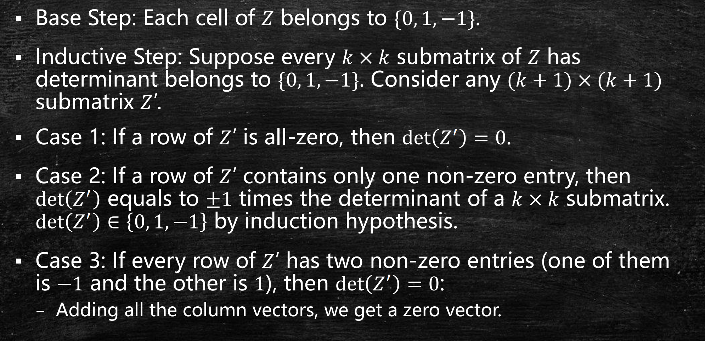

Last updated on June 13, 2025 pm
本文为SJTU-AI2615算法课程的知识点复习，主要复习内容为LP对偶的应用，包括最大流最小割定理的证明。
最大流最小割定理
原问题与对偶问题
maximizesubject tou:(s,u)∈E∑fsu0≤fuv≤cuvv:(v,u)∈E∑fvu=w:(u,w)∈E∑fuw∀(u,v)∈E∀u∈V∖{s,t}
minimizesubject to(u,v)∈E∑cuvyuvysu+zu≥1yvt−zv≥0yuv−zu+zv≥0yuv≥0∀u:(s,u)∈E∀v:(v,t)∈E∀(u,v)∈E,u=s,v=t∀(u,v)∈E
- 对偶问题的理解：
- yuv=1 表示边 (u,v) 是割边，yuv=0 表示不是
- zu=1 表示 u 在 s 一边，zu=0 表示 u 在 t 一边
- 该对偶问题是分数形式的最小割问题
证明对偶问题有整数最优解
- 核心思路：证明多面体 P={x:Ax≤b} 的所有顶点均为整数点
- 定理：如果 A∈Rm×n 是全单模（totally unimodular）矩阵，b 是整数向量，那么多面体 P={x:Ax≤b} 的顶点均为整数
- 如果矩阵 A 的任何子方阵的行列式都等于0，1 或 −1，那么 A 是全单模矩阵
- 性质：如果 A 是全单模矩阵，那么 AT,[IA],[AI],[IA],[AI] 都是全单模矩阵
- 归纳法证明：
